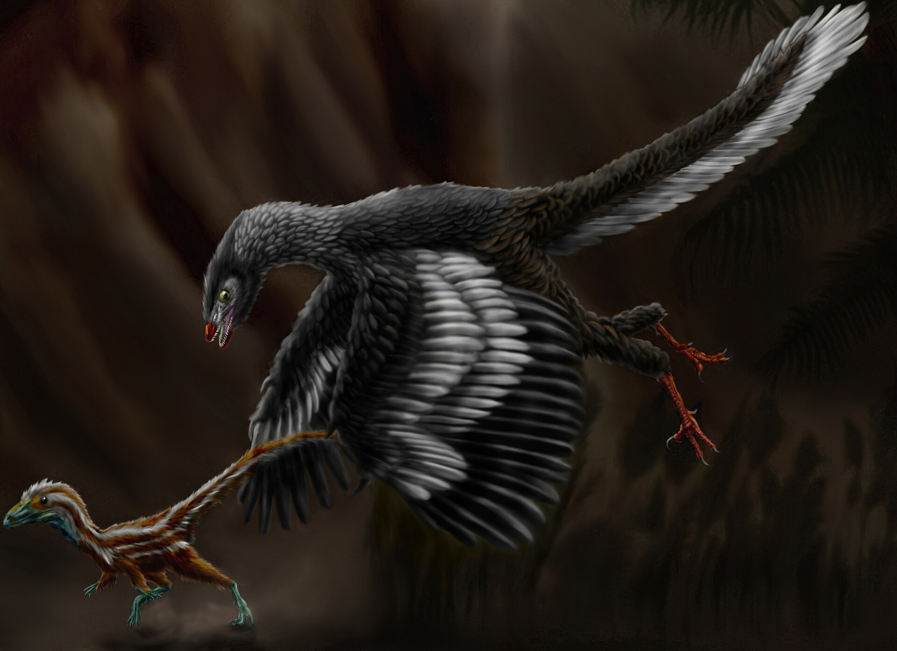

A feathered dinosaur
Archaeopteryx
Feathers, teeth, and a long bony tail. Not an ordinary bird.
Drawing: Durbed, CC BY-SA 3.0, via Wikimedia Commons. Artist’s concept, not a photograph. Drawing file page

TODO machine-draft translation: English for review.
There is no film of this animal made for this site. The picture behind the title is a drawing. The photograph lower down is the fossil.
What we know
- Southern Germany was a string of salty, warm lagoons. The bottom water had almost no oxygen, so anything that sank was left alone, then covered in fine lime mud. That is how Archaeopteryx was preserved, feathers and all. It had feathers, teeth, and a long bony tail.
- The photograph is the Berlin specimen, the original fossil, not a cast. It is at the Museum für Naturkunde in Berlin. The rock it came from is the Solnhofen Limestone, around Solnhofen in Bavaria. Museum für Naturkunde Berlin Bürgermeister-Müller-Museum, Solnhofen
- The drawing behind the title is an artist’s concept of Archaeopteryx chasing Compsognathus, a small dinosaur from the same lagoons. The drawing is not a photograph. Drawing file page
- Found in 1861, two years after Darwin’s book, it became famous evidence that birds came from reptiles. The age used on this site’s Solnhofen coin is about 150 million years ago, in the Late Jurassic.
What this page does not claim
- No body length is written on the Solnhofen coin or on the two museum pages linked here, so this page does not draw a person next to the animal.
- The pin is the limestone in Bavaria. It is not the museum in Berlin, and it is not a drawing of the animal. The place marker was made for this site. Created by the Founder and SI.


Sources (4)
- Bürgermeister-Müller-Museum, Solnhofen
- Museum für Naturkunde Berlin: the Berlin specimen
- Wikimedia Commons — the Berlin fossil photograph, CC BY-SA 4.0
- Wikimedia Commons — the hero drawing, CC BY-SA 3.0